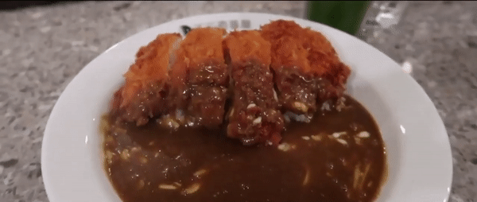

Katsu Curry

Tastes like home
My absolute favorite dish :)
Ingredients
Curry
- 400g onion sliced into 1cm wide pieces
- 250g potato cut into 1.5cm cubes
- 100g carrot sliced to 7mm thick pieces
- 1 tbsp oil
- ½ packet of 230g House Vermont Curry
- 800ml water
- 4 cups cooked rice (hot)
- 4 Chicken Cutlets cut into 2.5cm wide strips
Condiment (optional)
Instructions
- Add oil to a pot and heat over medium high heat.
- Add onion and sauté for a few minutes or until the onion becomes
translucent and edges start getting slightly burnt.
- Add potatoes and carrots into the pot and stir for a couple
of minutes or until the surface of the vegetables starts getting cooked.
- Add water and turn the heat up to bring it to a boil. Then reduce the heat to
medium low and simmer for about 7 minutes or until the vegetables are nearly cooked through.
- Break the curry roux cake into small blocks along the lines and add them into the pot. Stir gently to blend the curry roux.
- Reduce the heat to low, place a lid on and cook for about 10 minutes or until the curry roux is completely dissolved. Stir occasionally
as the curry tends to stick to the bottom of the pot.
- Check the consistency of the sauce. It should be like béchamel sauce. If it's too thick, adjust with some water. If too thin, cook further
without the lid. It will thicken when cooled down as well.
- Turn the heat off.
Serving
- Place a cup of hot cooked rice onto one side of a plate. Place the chicken cutlet pieces next to the rice, leaning them on the rice so that
there will be a space to pour the curry.
- Pour curry next to the chicken cutlet, put fukujinzuke on the side and serve immediately.
Return to top
Return to the main menu